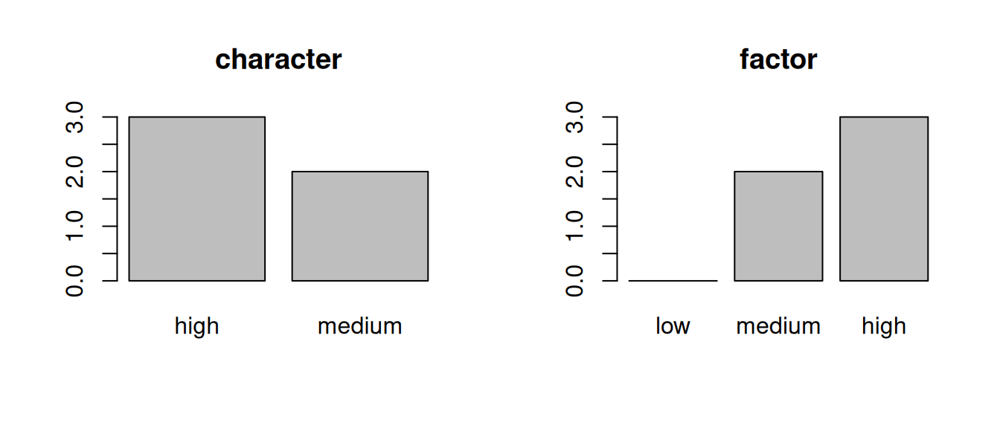

d <- data.frame(
country = c("NL", "BE", "DE", "FR", "UK"),
age = c(20 , 24 , 19 , 28 , 22 ),
height = c(176 , 165 , 180 , 175 , 185 )
)
d1.4 Data in R
Data frames, vectors, and object types in R.
You arrive here from Installing and Running R, so you can already assign values to names and run code in a script. Here you’ll meet the data frame — the table-shaped object you’ll use to hold almost every data set in this book — look under the hood at the vectors and value types that make up its columns, and briefly tour a few other data structures you’ll encounter along the way.
→ See this module in the skill tree
1.4.1 Data frames: rectangular data
In practice, you’ll rarely work with single values alone. Almost all data you’ll encounter in this course looks like a spreadsheet or table: rows represent observations (such as people, countries, or social media posts), and columns represent variables (the properties measured for each observation). In statistics and data science, this is often called rectangular data. In R, it is called a data frame.
Here is a small data frame with three columns, built from five people’s country, age, and height (in cm):
Each row is a person, and each column is a variable (country, age, and height). This is the shape that almost every data set in this book will take, whether it comes from a survey, an experiment, or a collection of tweets.
Working with columns and rows
There are a few basic operations you need to know to handle most of the things you will do with data frames: selecting, creating, and modifying columns, and selecting rows based on their position or a condition.
Using $ to select, create and modify columns
You can select a single column by name using the $ (dollar) operator: data_frame$column_name. For example, to select the height column from our data frame d, you would write:
d$height[1] 176 165 180 175 185In the Installing and Running R module you already learned about assigning values to names using <-. You can use the same operator to create a new column or overwrite an existing one.
d$height_pct <- d$height / 100
dUsing [, ] to select rows and columns
To select specific rows and columns, R uses square brackets with two positions separated by a comma: d[rows, columns]. You can select rows and columns by their positions, kind of like coordinates on a grid. But the more common ways are to select rows by a condition (d$age > 21) and columns by their name (c("country", "height").
d[1:3, ] # first 3 rows, all columns
d[d$age > 21, ] # all rows where age is greater than 21
d[, c("country", "age")] # all rows, only country and age columnsPutting this together, here we look at the country and height columns for only the rows where the age is greater than 21:
d[d$age > 21, c("country", "height")]
TipA more intuitive way is coming
If you feel that using the bracket notation [, ] is not very intuitive, you are not alone. Modern R users often prefer using the tidyverse, which provides a more readable and intuitive syntax for selecting rows and columns, and comes with a set of powerful tools for data management. We will also use the tidyverse throughout this book, starting in Chapter 2.1 Data Frames.
In this tutorial we first teach you the basics of the classic approach, because $ and [, ] are built into base R, and you will often still encounter them in R documentation, online resources and AI responses. And what you learn here will also help you learn the tidyverse faster, because the general principles are the same for both.
1.4.2 Vectors and value types
When you extracted d$height above, what R gave you back was a vector: an ordered sequence of values that all have the same type. Understanding how data is composed of different elements like this help you breaks down what you need to learn into smaller pieces:
- A data frame is a collection of vectors stacked side by side as columns.
- A vector is an ordered collection of values of the same
type. - A value is a single piece of data, which can be of various
types(numeric, character, logical, etc.).
block-beta
columns 3
block:c1:1
columns 1
h1["<b>country</b><br/>(character)"]
v1["'NL'"]
v2["'BE'"]
v3["'DE'"]
end
block:c2:1
columns 1
h2["<b>age</b><br/>(numeric)"]
a1["20"]
a2["24"]
a3["19"]
end
block:c3:1
columns 1
h3["<b>height</b><br/>(numeric)"]
b1["1.76"]
b2["1.65"]
b3["1.80"]
end
classDef header fill:#2c3e50,stroke:#2c3e50,color:#ffffff
classDef cell fill:#ffffff,stroke:#d5dbe0,color:#2c3e50
class h1,h2,h3 header
class v1,v2,v3,a1,a2,a3,b1,b2,b3 cell
The key thing to understand about vectors is that all values must have the same type. This is what allows us to perform certain operations on them, like calculating the average (mean) age, or counting the different countries in our data.
For example, here we create a numeric vector by combining (c) five numbers. And we can calculate the mean of that vector with mean():
ages <- c(20, 24, 19, 28, 22)
mean(ages)[1] 22.6If we try to combine numbers and text, we get a character vector instead, and mean() no longer works, because this is only possible with numeric of logical vectors (as we explain below).
ages_but_sloppy <- c(20, 24, "nineteen", 28, 22)
mean(ages_but_sloppy)Warning in mean.default(ages_but_sloppy): argument is not numeric or logical:
returning NA[1] NASo in order to work with data, you need to understand the common data types and what types of operations are allowed on them. The next section gives you a quick overview of the most common types.
Value types
Every vector (and therefore every column in a data frame) has a type. The type determines what kind of information the vector holds and what operations R allows you to run on it. These are the types you will use most:
| Type | What it holds | Example in R |
|---|---|---|
| Numeric | Numbers (whole or decimal) | c(20, 1.76, -3.5) |
| Character | Text (always in quotes) | c("NL", "BE", "hello") |
| Logical | TRUE or FALSE |
c(TRUE, FALSE, TRUE) |
| Factor | Categories with a fixed set of levels | factor(c("low", "high")) |
You can ask R for the type of a vector with class():
class(d$country)[1] "character"class(d$age)[1] "numeric"Numeric
Numbers, used for math and statistics:
d$age + 1[1] 21 25 20 29 23mean(d$age)[1] 22.6sd(d$age)[1] 3.577709Character
Text, used for labels, names, and (later in this book) entire documents. A common operation is counting how often each value occurs with table():
table(d$country)
BE DE FR NL UK
1 1 1 1 1 You will learn how to search and edit text in Chapter 2.5.
Logical
TRUE or FALSE. You get a logical vector whenever you test a condition, which makes this type especially useful for finding and filtering data:
d$age > 21[1] FALSE TRUE FALSE TRUE TRUEWith which() you can ask which positions are TRUE, i.e. which people are older than 21:
which(d$age > 21)[1] 2 4 5This is exactly what happened when we filtered the data frame earlier with d[d$age > 21, ]. You can read that line as: “give me the rows where it is TRUE that age > 21”.
Factor
A factor is for categories. Unlike a character vector, it also stores all possible categories (its levels) and their order, even categories that nobody picked. Compare a survey question on education level, stored as character and as factor:
edu_chr <- c("high", "medium", "high", "medium", "high")
edu_fct <- factor(edu_chr, levels = c("low", "medium", "high"))par(mfrow = c(1, 2))
barplot(table(edu_chr), main = "character")
barplot(table(edu_fct), main = "factor")
The character version only shows the answers that occur, sorted alphabetically. The factor version shows that “low” was an option that nobody chose, and keeps the categories in their meaningful order.
Missing values (NA)
Real-world data is rarely complete: survey respondents skip questions, sensors fail, or records go missing. In R, a missing value in any vector type is represented by NA (Not Available).
scores <- c(8, 7, NA, 9, 6)Because NA means “unknown”, most math functions will return NA if even a single value is missing — after all, the average of four known numbers and one unknown number is also unknown:
mean(scores)[1] NATo tell R to ignore missing values and compute the result from the remaining data, add the argument na.rm = TRUE (NA remove):
mean(scores, na.rm = TRUE)[1] 7.5Type conversions
Because a vector’s type determines what you can do with it, you cannot run math on a character vector, even if the text happens to look like numbers:
age_text <- c("20", "24", "19")
mean(age_text) # throws a warning and returns NAWarning in mean.default(age_text): argument is not numeric or logical:
returning NA[1] NAWhen data gets imported with the wrong type, you can explicitly convert (coerce) it using as.numeric() or as.character():
age_num <- as.numeric(age_text)
mean(age_num)[1] 21If you try to convert something that doesn’t make sense, R turns the impossible values into NA and gives you a warning:
as.numeric(c("20", "twenty-four", "19"))Warning: NAs introduced by coercion[1] 20 NA 19R also performs automatic conversion whenever needed. For example, because a vector can only hold one type, combining numbers and text inside c() automatically converts all the numbers into text:
c(20, 24, "NL") # all values become character[1] "20" "24" "NL"Automatic conversion can also be very useful. When you use a logical vector in a math function, R automatically converts TRUE to 1 and FALSE to 0. This gives you a quick way to count or calculate proportions:
sum(d$age > 21) # counts how many people are older than 21[1] 3mean(d$age > 21) # proportion of people older than 21[1] 0.61.4.3 Other data structures you will encounter
Data frames and vectors cover 90% of your daily work in R, but you will regularly bump into three other structures — often as the output of functions or when working with specialized data.
Lists
A list is R’s most flexible container: unlike a vector (which forces every item to be the same type) or a data frame (which forces every column to be the same length), a list can bundle any mix of objects — single values, vectors of different lengths, or even entire data frames — into one ordered collection. Elements in a list Usually have names, and you can extract them with $ just like columns in a data frame:
study_info <- list(
title = "Youth Media Survey",
sample_size = 5,
countries = c("NL", "BE", "DE", "FR", "UK"),
is_completed = TRUE
)
study_info$countries[1] "NL" "BE" "DE" "FR" "UK"Where you’ll see them: Almost every statistical test or model in R returns its results as a named list, because a single analysis produces many different pieces of output (test statistics, p-values, confidence intervals, residuals). For example, if we run a two-sample t-test or a correlation test, the result is a list from which you can pull specific pieces with $:
test_result <- cor.test(d$age, d$height)
test_result$estimate # the correlation coefficient cor
-0.3835901 test_result$p.value # the p-value[1] 0.5238546Matrices
A matrix looks just like a data frame — a two-dimensional grid of rows and columns — with one strict rule: every single cell must have the exact same data type (almost always numeric).
m <- matrix(c(1, 2, 3, 4, 5, 6), nrow = 3, ncol = 2)
m [,1] [,2]
[1,] 1 4
[2,] 2 5
[3,] 3 6Where you’ll see them: Because R knows every cell in a matrix is a number, it can run fast mathematical operations across the whole grid at once. A classic example is calculating a correlation matrix with cor(), which shows the correlation between every pair of variables.
Here, too, R handles conversions automatically: if you pass a selection of numeric columns from a data frame into cor(), R converts that slice into a matrix behind the scenes and returns a correlation matrix:
cor(d[, c("age", "height")]) age height
age 1.0000000 -0.3835901
height -0.3835901 1.0000000Networks (Graphs)
We don’t do network analysis in the standard curriculum of this book, but networks (also called graphs) are a fundamental data structure to understand. Instead of rows and columns of isolated observations, a network represents nodes (actors or items) connected by edges (relationships or ties).
flowchart LR A((User A)) -->|follows| B((User B)) C((User C)) -->|follows| B B -->|follows| D((User D)) C -->|follows| D
Where they are used: * Social media: Nodes are accounts, and edges represent who follows, replies to, or shares content from whom. * Epidemiology: During pandemics like COVID-19, researchers map contact networks (who came into physical contact with whom) to model how a virus spreads and identify superspreaders. * Diffusion of ideas: Using the exact same logic as epidemiology, social scientists study how innovations, rumors, or political norms spread through communities.
Structural restrictions: Directed Acyclic Graphs (DAGs)
Just as a matrix restricts a table to a single data type to make math possible, networks often add structural rules for specific purposes.
One crucial restricted network is the Directed Acyclic Graph (DAG): 1. Directed: Every edge is a one-way arrow pointing from one node to another. 2. Acyclic: There are no loops (cycles) — if you follow the arrows forward from any node, you can never end up back where you started.
flowchart LR X[Smoking] --> M[Tar in Lungs] M --> Y[Lung Cancer] Z[Age] --> X Z --> Y
You will see this exact data structure in two other places in this book: * Your computer’s file system (Chapter 1.1): Folders contain subfolders and files in a one-way hierarchy (project -> data -> survey.csv), and a subfolder can never contain its own parent folder. * Formal models of causality (Chapter 6.1): Because causes must precede their effects, causal relationships form a DAG where arrows point from cause to effect (Age -> Smoking -> Lung Cancer), allowing us to figure out which variables we need to control for in a statistical analysis.
1.4.4 Summary: what to remember
We covered several structures here, but for your day-to-day work in the rest of this book, keep your focus on the first two:
- Data frames are the rectangular tables (rows of observations, columns of variables) that hold your data sets.
- Vectors are the columns inside a data frame, where every value shares a single type (
numeric,character,logical, orfactor) and missing values are marked asNA. - Lists, matrices, and networks are specialized structures you will mostly meet when inspecting model output, running correlations, or drawing causal diagrams.